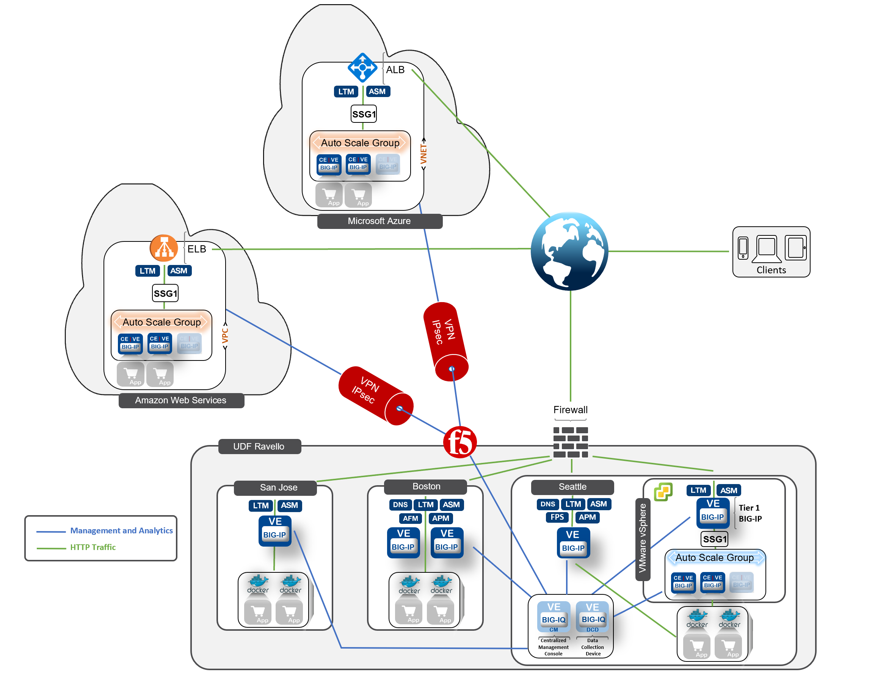

F5 Community Training & Labs Source | Edit on
F5 BIG-IQ v6.1 and BIG-IP Cloud Edition¶
Welcome¶
Welcome to the F5 BIG-IQ & Cloud Edition Lab - 2019
The content contained here leverages a full DevOps CI/CD pipeline and is sourced from the GitHub repository at https://github.com/f5devcentral/f5-big-iq-lab. Bugs and Requests for enhancements can be made by opening an Issue within the repository.
This document details the lab exercises and demonstrations that comprise the hands-on component of the BIG-IQ. The environment is setup with basic configuration and associated traffic generation to populate dashboards for easy demos. Additional configuration can be added to support items that are not currently covered.
This lab environment is designed to allow for quick and easy demos of a significant portion of the BIG-IQ product. The Linux box in the environment has multiple cron jobs that are generating traffic that populates the monitoring tab.
There is lab environment available in UDF and Ravello (Oracle Public Cloud) for internal F5 users as well as Partners (please feel free to contact an F5 representative).
{kind=link}
Networks:
10.1.1.0/24 UDF Management Network
10.1.10.0/24 UDF External Network
10.1.20.0/24 UDF Internal Network
172.17.0.0/16 UDF Docker Internal Network
172.100.0.0/16 AWS Internal Network
172.200.0.0/16 Azure Internal Network
List of instances:
BIGIQ <> DCD 6.1.0
2x BIG-IP 13.1 / 1 cluster (BOS)
1x BIG-IP 14.1 / 1 standalone (SEA)
1x BIG-IP 12.1 / 1 standalone (SJC)
LAMP Server - Radius, DHCP, RDP, Application Servers (Hackazon, dvmw, f5 demo app), Traffic Generator (HTTP, Access, DNS, Security).
Components available:
“System” - Manage all aspects for BIG-IQ,
“Device” - Discover, Import and manage BIGIP devices.
“Configuration” - ADC, Security (ASM config/monitoring, AFM config, FPS monitoring.)
“Deployment” - Manage evaluation task and deployment.
“Monitoring” - Event collection per device, statistics monitoring, iHealth reporting integration, alerting, and audit logging.
“Application” - Application Management (Cloud Edition, AS3)
Contents/Lab:
- Class 1: BIG-IQ Application Management and AS3 (Cloud Edition)
- Class 2: BIG-IQ Deployment with auto-scale on AWS, Azure & VMware (Cloud Edition)
- Class 3: BIG-IQ Analytics (Cloud Edition)
- Class 4: BIG-IQ Platform
- Class 5: BIG-IQ Device Management
- Class 6: BIG-IQ ADC Management
- Class 7: BIG-IQ Application Firewall Manager (AFM)
- Class 8: BIG-IQ Application Security Manager (ASM)
- Class 9: BIG-IQ Access Policy Manager (APM)
- Class 10: BIG-IQ DNS
- Class 11: BIG-IQ DDoS Monitoring and Dashboard
Warning
When using the UDF or Ravello Lab, make sure:
STOP the ESXi if you do not plan to demo VMware SSG.
STOP your deployment at the end of your demo.
Do not forget to tear down your AWS & Azure SSG if any.
In case of demonstrating VMware SSG, use only Arizona, Virginia or Frankfurt region to get good performance.
Warning
The licenses used to license the BIG-IP and BIG-IQ are dev licenses and might need to be re-activated.
Documentations:
Videos:
Tools:
Note
A draft version of this lab guide can be found here.